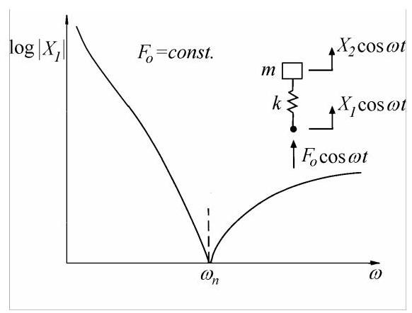
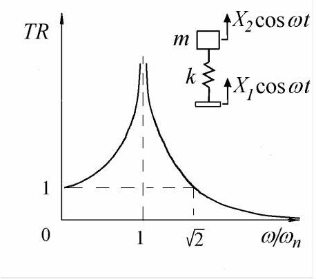
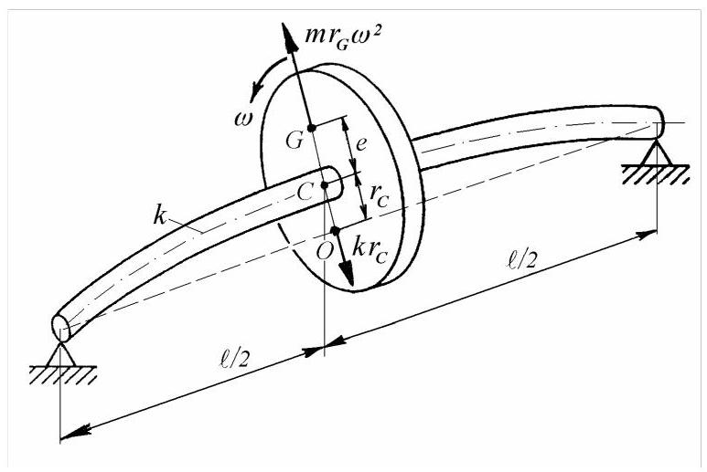
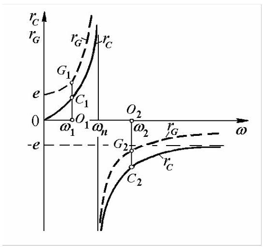

2.2.9 反共振
考虑图2.16所示的无基础质量-弹簧系统，其基座受简谐力作用。运动方程可写为
驱动点位移的幅值由下式给出
当力大小\({F}_{0} = const\)为常数时，其幅值在固有频率处取得最小值零。
这是反共振(antiresonance)状态。一般而言，它发生在某一频率，此时最大的力幅产生最小的运动。
与共振(resonance)不同，后者是振动系统的全局属性，与驱动点无关；反共振则是局部属性，依赖于驱动位置。

图2.16
无阻尼时，基础激励的簧载质量系统的反共振频率与固定基础-质量激励系统的共振频率相同。若在驱动点附加第二个质量，所得的质量-弹簧-质量系统在驱动点响应中同时出现共振与反共振。
2.2.10 传递率
若质量-弹簧系统由施加在弹簧未连接质量端的指定运动\({x}_{1} = {X}_{1}\cos {\omega t}\)激励，则传递到质量\({x}_{2} = {X}_{2}\cos {\omega t}\)的运动由幅值比定义
该比值\({TR} = \left| {X}_{2}\right| /{X}_{1}\)称为传递率(transmissibility)，在图2.17中作为频率比\(\omega /{\omega }_{n}\)的函数绘出。
当\(\omega /{\omega }_{n} > \sqrt{2}\)时，传递率小于1，称簧载质量与基础运动隔离。隔振仅在共振以上、频率\(\omega > \sqrt{2}{\omega }_{n}\)时才能实现。质量与振动基础之间的弹簧可设计为通过给定\({TR}\)值来保证所需的隔振程度，从而表明隔离质量的运动相对于直接安装在振动基础上的情况减少了多少。

图2.17
2.2.11 旋转轴的临界转速
考虑图2.18所示的转子，由单个刚性圆盘对称地置于均匀无质量轴上，轴由两个刚性轴承支承。圆盘质心\(G\)与其几何中心\(C\)的径向距离为\(e\)。轴承中心线与圆盘平面交于点\(O\)。
当轴开始绕轴承轴线旋转时，圆盘在其自身平面内绕其几何中心\(C\)旋转。于是产生作用于圆盘的离心力\(m{r}_{G}{\omega }^{2}\)，其中\(\omega\)为转速，\(m\)为圆盘质量，\({r}_{G} = {OG}\)。该力使轴在轴承处发生挠曲，称轴处于不平衡状态。轴以恢复力\(k{r}_{C}\)在\(C\)处反作用，其中\(k\)为轴在圆盘处的刚度，\({r}_{C} = {OC}\)。
忽略重力与阻尼影响，圆盘仅受这两个力作用。为保持平衡，两力必须共线、大小相等且方向相反
求解\({r}_{C}\)，得到
其中\({\omega }_{n} = \sqrt{k/m}\)为零转速时转子横向振动(lateral vibration)的自然圆频率(natural circular frequency)。
This expression represents the radius of the orbit along which the point \(C\) moves about the bearing axis with an angular velocity \(\omega\) . Because at the same time the disc rotates in its own plane about \(C\) with the same angular velocity, the shaft whirling is called synchronous precession.
该表达式表示点\(C\)绕轴承轴线以角速度\(\omega\)运动的轨道半径。由于同时圆盘在其自身平面内以相同角速度绕\(C\)旋转，因此轴的涡动称为同步进动(synchronous precession)。

Fig. 2.18
图2.18
点\(G\)的圆形轨道半径为
图2.19给出了\({r}_{C}\)(实线)和\({r}_{G}\)(虚线)随\(\omega\)变化的曲线。在转速\({\omega }_{1} < {\omega }_{n}\)时，系统旋转且重边\({G}_{1}\)位于\({C}_{1}\)外侧；而在\({\omega }_{2} > {\omega }_{n}\)时，轻边或与\({G}_{2}\)相对的一侧位于\({C}_{2}\)外侧。对于极高转速\(\omega > > {\omega }_{n}\)，半径\({r}_{C}\)等于偏心距，点\(O\)与\(G\)重合；圆盘绕其质心旋转。
当\(\omega = {\omega }_{n}\)时，半径\({r}_{C}\)和\({r}_{G}\)无限增大，此状态定义为临界转速(critical speed)。方程(2.36)和(2.37)表明，轴的临界转速等于转子横向振动的固有频率。
在临界转速处，点\(O, C\)与\(G\)相对位置的突变是由于忽略了阻尼。在有阻尼系统中，当轴速变化时，线段\({CG}\)相对于\({OC}\)连续旋转，因此“高点(测试中概念，计算中指的是几何形心)”不与“重点（测试概念，值得等效偏心）”重合。在临界转速时，两线段之间的夹角为\({90}^{ \circ }\)(见第2.4.11节)。

图2.19
尽管解析结果(2.36)和(2.37)与线性质量-弹簧系统的稳态响应(2.30)和(2.34)之间存在明显类比，但轴的受迫运动并非真正的振动。轴在此运动过程中不承受交变应力，只是产生简单弯曲。当角速度等于轴不旋转且仅作自由无阻尼弹曲振动时的弯曲振动圆频率时，弯曲最大。
MATLAB Demo: 临界转速
下面这段 MATLAB 脚本通过动画与静态图直观演示了单盘转子在不同转速下的同步进动（synchronous precession）现象，快速抓住“临界转速”这一核心概念，后续章节补充计算细节分析。
clear; clc; close all;
%% 1. 系统参数
m = 1; % 圆盘质量 (kg)
k = 500; % 轴刚度 (N/m)
omega_n = sqrt(k/m); % 固有频率 (rad/s)
e = 0.005; % 偏心距 (m)
zeta = 0.09; % 阻尼比
%% 2. 仿真参数
t_total = 0.5; % 总仿真时间 (s)
dt = 0.005; % 时间步长 (s)
t = 0:dt:t_total;
n_frames = length(t);
% 不同的转速比进行演示
omega_ratios = [0.5, 0.8, 1.0, 1.2, 4.0]; % omega/omega_n
omega_names = {'亚临界 (ω/ωₙ=0.5)', '接近临界 (ω/ωₙ=0.8)', ...
'临界转速 (ω/ωₙ=1.0)', '超临界 (ω/ωₙ=1.2)', '高转速 (ω/ωₙ=4.0)'};
%% 3. 为每个转速创建动画
for case_idx = 1:length(omega_ratios)
omega_ratio = omega_ratios(case_idx);
omega = omega_ratio * omega_n; % 实际转速
% 根据包含阻尼的公式计算幅值和相位
% r_C 是几何中心的位移幅值
r_C = e * omega_ratio^2 / sqrt((1 - omega_ratio^2)^2 + (2*zeta*omega_ratio)^2);
% phi 是位移(C)相对于不平衡(G)的相位滞后角
phi = atan2(2*zeta*omega_ratio, 1 - omega_ratio^2);
% 创建新图窗
figure('Name', ['同步进动 - ' omega_names{case_idx}], 'Position', [100, 100, 800, 800]);
% 设置坐标轴范围
max_radius = max(abs([r_C, r_C + e])) * 1.2; % 考虑偏心距
if max_radius > 0.1 % 限制显示范围
max_radius = 0.1;
end
% 初始化动画数据存储
frames = [];
for i = 1:n_frames
clf; % 清除当前图形
% 当前时间
current_time = t(i);
% 计算位置
theta = omega * current_time; % 不平衡质量G的角度
% 轴承中心 O (原点)
O = [0, 0];
% 圆盘几何中心 C 的位置 (有相位滞后)
C = [r_C * cos(theta - phi), r_C * sin(theta - phi)];
% 圆盘质心 G 的位置 (由C和偏心e矢量和得到)
G = [C(1) + e * cos(theta), C(2) + e * sin(theta)];
% 绘制轨道 (虚线)
% C的轨道
theta_orbit = 0:0.1:2*pi;
plot(r_C * cos(theta_orbit - phi), r_C * sin(theta_orbit - phi), 'k:', 'LineWidth', 1);
hold on;
% G的轨道
g_orbit_x = r_C * cos(theta_orbit - phi) + e * cos(theta_orbit);
g_orbit_y = r_C * sin(theta_orbit - phi) + e * sin(theta_orbit);
plot(g_orbit_x, g_orbit_y, 'r:', 'LineWidth', 1);
% 绘制轴承中心 (黑色)
plot(O(1), O(2), 'ko', 'MarkerSize', 10, 'MarkerFaceColor', 'k', 'DisplayName', '轴承中心 (Center)');
% 绘制轴截面 (灰色盘)
disk_radius = 0.008;
disk_theta = 0:0.1:2*pi;
disk_x = C(1) + disk_radius * cos(disk_theta);
disk_y = C(2) + disk_radius * sin(disk_theta);
fill(disk_x, disk_y, [0.8, 0.8, 0.8], 'EdgeColor', 'k', 'LineWidth', 1.5, 'FaceAlpha', 0.3);
% 绘制轴中心 (灰色, High Spot)
plot(C(1), C(2), 'o', 'MarkerSize', 6, 'MarkerFaceColor', [0.5 0.5 0.5], 'MarkerEdgeColor', 'k', 'DisplayName', '轴中心 (High Spot)');
% 绘制质心 (红色, Heavy Spot)
plot(G(1), G(2), 'ro', 'MarkerSize', 8, 'MarkerFaceColor', 'r', 'DisplayName', '质心 (Heavy Spot)');
% 绘制偏心距离线
plot([C(1), G(1)], [C(2), G(2)], 'r-', 'LineWidth', 2);
% 设置图形属性
axis equal;
xlim([-30, 30]*1e-3);
ylim([-30, 30]*1e-3);
grid on;
xlabel('x (m)');
ylabel('y (m)');
title([omega_names{case_idx} sprintf('\nΦ = %.1f deg, r_C = %.3f mm, r_G = %.3f mm', ...
rad2deg(phi), abs(r_C)*1000, norm(G)*1000)]);
legend('Location', 'northeast');
% 捕获当前帧
drawnow;
frame = getframe(gcf);
frames = [frames, frame];
% 控制动画速度
pause(0.05);
end
% 保存为gif (可选)
if case_idx == 3 % 只为临界转速保存gif
gif_filename = sprintf('synchronous_precession_critical.gif');
for i = 1:length(frames)
[A, map] = rgb2ind(frames(i).cdata, 256);
if i == 1
imwrite(A, map, gif_filename, 'gif', 'LoopCount', inf, 'DelayTime', 0.05);
else
imwrite(A, map, gif_filename, 'gif', 'WriteMode', 'append', 'DelayTime', 0.05);
end
end
fprintf('动画已保存为: %s\n', gif_filename);
end
end
%% 4. 绘制轨道半径随转速变化的静态图
figure('Name', '轨道半径vs转速比', 'Position', [200, 200, 800, 500]);
omega_ratio_plot = 0.1:0.05:3;
r_C_plot = zeros(size(omega_ratio_plot));
r_G_plot = zeros(size(omega_ratio_plot));
for i = 1:length(omega_ratio_plot)
r_C_plot(i) = e * omega_ratio_plot(i)^2 / sqrt((1 - omega_ratio_plot(i)^2)^2 + (2*zeta*omega_ratio_plot(i))^2);
phi_plot = atan2(2*zeta*omega_ratio_plot(i), 1 - omega_ratio_plot(i)^2);
r_G_plot(i) = sqrt(r_C_plot(i)^2 + e^2 + 2*r_C_plot(i)*e*cos(phi_plot));
end
% 绘制曲线
plot(omega_ratio_plot, r_C_plot/e, 'b-', 'LineWidth', 2, 'DisplayName', 'r_C/e (High Spot)');
hold on;
plot(omega_ratio_plot, r_G_plot/e, 'r--', 'LineWidth', 2, 'DisplayName', 'r_G/e (Heavy Spot)');
% 标记临界转速
line([1, 1], [0, 10], 'Color', 'k', 'LineStyle', ':', 'LineWidth', 2, 'DisplayName', '临界转速');
xlabel('转速比 (ω/ωₙ)');
ylabel('无量纲轨道半径 (r/e)');
title('同步进动轨道半径随转速的变化');
legend('show', 'Location', 'best');
grid on;
ylim([0, 10]);
xlim([0, 3]);
% 添加说明
text(1.5, 5, '超临界区域:重点在内侧', 'FontSize', 10, 'BackgroundColor', 'yellow');
text(0.3, 5, '亚临界区域:重点在外侧', 'FontSize', 10, 'BackgroundColor', 'cyan');